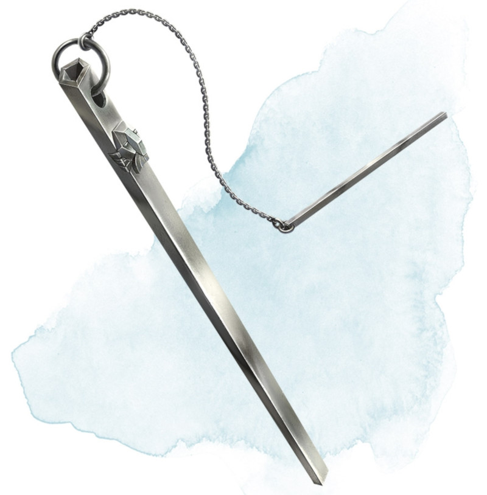

Carillon d'ouverture
[ Chime of Opening ]
Objet merveilleux, rare
Ce tube de métal creux mesure environ 30 centimètres de long et pèse 500 grammes. Vous pouvez le frapper en utilisant une action, et le pointer vers un objet pouvant être ouvert et se trouvant à 36 mètres de vous maximum, comme une porte, un couvercle ou une serrure. En faisant cela, le carillon sonne d'un ton clair, et une serrure ou un loquet sur l'objet s'ouvre, à moins que le son ne puisse pas atteindre l'objet. S'il ne reste aucune serrure ou loquet en place, l'objet s'ouvre de lui-même. Le carillon peut être utilisé dix fois. Après ces dix utilisations, il se fissure et ne sert plus à rien.
Dungeon Master´s Guide (SRD)
